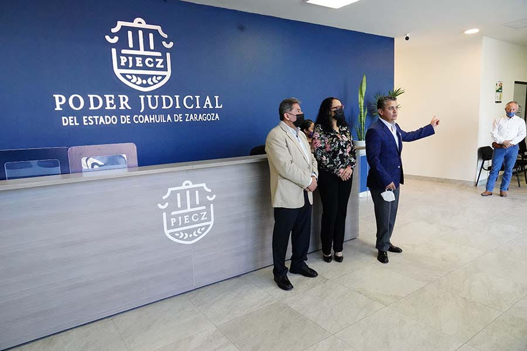

CAPÍTULO 1. JUSTICIA CERCANA
Nuestra época actual demanda la consolidación de una infraestructura jurisdiccional acorde a las necesidades de la sociedad, es así que debemos colocarnos como una institución a la vanguardia en la impartición de justicia, que a su vez sea cercana y accesible a las personas.
Por ello, este 2021 nos dimos a la tarea de propiciar las condiciones necesarias para amplificar nuestro acercamiento con todos los sectores de la sociedad, ratificándonos como una instancia confiable que garantiza el acceso a la justicia y el respeto a los derechos humanos a través de sus órganos jurisdiccionales, no jurisdiccionales y administrativos.
Este canal de comunicación entre los ciudadanos y el Poder Judicial, nos permite conocer de manera directa cuáles son las necesidades más apremiantes que se deben atender y con ello crear estrategias objetivas que nos permitan resolverlas de manera más eficiente.
Con base en lo anterior, en 2021 concretizamos diversas acciones focalizadas en atender situaciones que han impactado a nuestra sociedad en los últimos años, entre las cuales podemos destacar el fortalecimiento del uso de los medios alternos en la solución de los conflictos como herramienta ideal para que las partes acuerden entre ellas mismas, de manera pacífica y dialogada, la solución más favorecedora, sin necesidad de que intervenga un juzgador. Así informamos sobre los resultados obtenidos en este periodo en las actividades que lleva a cabo nuestro Centro de Medios Alternos de Solución de Controversias.
Por otro lado, también damos cuenta sobre lo que este año logramos en la atención rápida y eficiente dentro del Centro de Evaluación Psicosocial a todas las mujeres y hombres que forman parte en algún asunto ante nuestros juzgados. Así, con el apoyo de psicólogas y trabajadoras sociales, se emitieron los dictámenes psicosociales que fueron solicitados por los diversos juzgados de Primera Instancia en el estado y que les sirven a las y los juzgadores como sustento objetivo en su toma de decisiones.
Mediante este apartado también informamos lo alcanzado en cuanto a la implementación del programa denominado Justicia Itinerante como respuesta a la ciudadanía para acercar los servicios gratuitos otorgados por el Instituto Estatal de Defensoría Pública respecto a asesoría y defensa legal ante los órganos jurisdiccionales. Con esto buscamos que todas y todos accedan, sin condiciones ni restricciones, al derecho previsto por la Constitución Federal, de una defensa adecuada por parte de abogados especialistas en cada materia.
El 2021 fue un año trascendental en nuestra lucha para garantizar a las mujeres una vida libre de violencia. Somos pioneros en atender, mediante juzgados creados de manera especializada, esta problemática que lacera de manera particular los derechos de las mujeres. Hoy en Coahuila, las mujeres víctimas de violencia cuentan con una instancia que atiende los asuntos en materia familiar y en materia penal de manera simultánea para que su acceso a la justicia sea más rápido y menos desgastante para ellas y sus hijas e hijos. Destacamos en este apartado las acciones que se realizaron al interior de estos Juzgados Especializados en Violencia Familiar contra la Mujer, como parte de las políticas públicas que los diversos órganos de gobierno hemos consensuado.
Asimismo, en nuestro afán de estrechar lazos con la población, lanzamos la campaña Ponte Trucha como herramienta para difundir, a través de los medios de comunicación, información valiosa respecto a temas de interés general. Esta campaña nos permitió durante este año concientizar respecto al llenado correcto de los documentos conocidos como pagarés, para evitar abusos en su uso y proteger los derechos de quienes en algún momento han llegado a firmarlos, dando a conocer los resultados obtenidos.
La actual estructura del sistema judicial local está enfocada en mantener el contacto directo con las y los justiciables. Son ellos el eje central de nuestra actuación y la razón de ser de este modelo de justicia que ofrecemos hoy en día.
CENTRO DE MEDIOS ALTERNOS DE SOLUCIÓN DE CONTROVERSIAS
Quienes tenemos encomendada la labor de impartir justicia en el Estado de Coahuila de Zaragoza, consideramos de fundamental importancia realizarlo de manera efectiva en beneficio de la sociedad, e incluso a través de las diversas vías que en la actualidad nuestra legislación prevé, no solo ante los juzgados y tribunales.
Creemos que una manera efectiva para lograr el acercamiento directo con la sociedad y que ésta sienta confianza en el sistema de justicia, es brindarle la posibilidad de resolver de una manera más rápida y sencilla sus asuntos. Es por eso que el Poder Judicial del Estado, respalda y fomenta el uso de mecanismos diversos a los jurisdiccionales que permiten a las y los ciudadanos llegar a una solución, a través del diálogo, que favorezca a las partes involucradas en una situación de discrepancia. Dichas soluciones son siempre tomadas por las propias partes, bajo la conducción de una persona facilitadora que propicia el entendimiento entre ellas a fin de acordar de manera pacífica el fin a la controversia, sin necesidad de la intervención de un juzgador.
En ese sentido, contamos con la valiosa colaboración de personas especializadas que conforman el Centro de Medios Alternos de Solución de Controversias (CEMASC), quienes día a día coadyuvan a los ciudadanos, a través de la mediación y otros mecanismos alternativos contemplados en la ley de la materia.
En este Centro, trabajamos en la orientación gratuita, capacitación y certificación en medios alternos, y llevamos a cabo procedimientos como: mediaciones, conciliaciones y juntas restaurativas en las materias familiar, civil, mercantil y penal; todo en coordinación con las y los operadores de justicia, desde magistrados, jueces de Primera Instancia, agentes del Ministerio Público, así como organismos públicos y particulares especializados en ello.
Durante el año 2021 logramos en todo nuestro estado la apertura de dos mil 244 expedientes de mecanismos alternativos, de los cuales se cuenta ya a la fecha con un acuerdo cumplido en mil 536. Es decir, el 68 por ciento de los mismos han sido resueltos de manera completa y satisfactoria.
Para lograr los resultados mencionados, cada una de las personas adscritas al CEMASC, generaron entrevistas y orientaciones a los usuarios a quienes se les brinda toda la información necesaria para llevar a cabo estos mecanismos que garantizan el acceso a la justicia de una manera más rápida y eficiente.
Tabla 1. Servicios prestados por el Centro de Medios Alternos de Solución de Controversias
| Actividad | 2021 |
|---|---|
| Personas entrevistadas para la exploración del conflicto | 7,804 |
| Invitaciones enviadas a efecto de acercar a otras partes involucradas en el conflicto | 9,184 |
| Procedimientos aperturados | 2,244 |
| Procedimientos concluidos con acuerdo | 1,621 |
| Concluidos con acuerdo cumplido | 1,536 |
| Procedimientos reaperturados | 5 |
| Solicitantes que fueron orientados o derivados a otra instancia | 36 |
Fuente: Centro de Medios Alternos de Solución de Controversias del Poder Judicial del Estado de Coahuila de Zaragoza. 2021.
Mediación prejudicial e intrajudicial
Nuestra legislación contempla diversas etapas en las que las personas pueden optar por los medios alternos para solucionar su problemática, ya sea antes o durante un procedimiento judicial. La mediación intrajudicial es aquella que se lleva a cabo una vez que ya se ha iniciado un procedimiento ante el órgano jurisdiccional y durante este 2021 a través del CEMASC realizamos 260 procedimientos intrajudiciales de los cuales 137 pusieron fin a conflictos de carácter familiar, civil, mercantil y penal.
Por otra parte, quienes eligieron desde el primer momento la alternativa de resolver su conflicto a través de estos medios, dieron origen a la atención de 901 asuntos, lo cual se traduce en que este mismo número de asuntos no tuvieron que ventilarse ante los juzgados de Primera Instancia en nuestro estado, que cuentan con una carga histórica considerable, propiciando así el desahogo en estos órganos.
Tabla 2. Resolución de asuntos prejudiciales en el CEMASC
| Año | Cantidad |
|---|---|
| 2019 | 1,624 |
| 2021 | 901 |
Fuente: Centro de Medios Alternos de Solución de Controversias del Poder Judicial del Estado de Coahuila de Zaragoza. 2021.
Cabe mencionar que este año trabajamos en un proyecto piloto a fin de que una persona facilitadora en mediación y conciliación se encuentre de forma permanente en los juzgados de Primera Instancia en materia familiar, con la finalidad de que los justiciables conozcan la oportunidad de resolver sus conflictos a través del diálogo. Bajo esta mecánica logramos la apertura de 30 expedientes, llegando a un acuerdo satisfactorio en 14 de estos asuntos.
CENTRO DE EVALUACIÓN PSICOSOCIAL
En el Poder Judicial del Estado de Coahuila de Zaragoza, contamos con el valioso apoyo en nuestro quehacer jurisdiccional de un órgano especializado encargado de la emisión de dictámenes que sirven como sustento para las y los juzgadores a la hora de tomar una decisión en asuntos que han sido sometidos a su conocimiento.
Desde hace quince años, cumplidos en 2021, el Centro de Evaluación Psicosocial del Poder Judicial del Estado de Coahuila de Zaragoza representa un precursor a nivel nacional puesto que quienes laboran al interior del mismo hacen uso de una metodología basada en el enfoque sistémico, es decir, a diferencia de enfoques tradicionalistas que recurren al uso de pruebas psicométricas o proyectivas para la elaboración un dictamen, en nuestro estado contamos con un equipo interdisciplinario conformado por profesionales del área de psicología y trabajo social, quienes emplean una visión y diagnóstico ecológico que permiten tomar a las personas en todo su contexto social, familiar y personal. Por lo anterior, las psicólogas y trabajadoras sociales brindan información más objetiva sobre la realidad de las personas a los órganos jurisdiccionales, lo que nos ha permitido atender a más de 252 mil personas desde su creación en el 2006.
Para este año logramos trabajar a través de Unidades ya disponibles en cada uno de los ocho Distritos Judiciales, situación que nos permite brindar nuestros servicios gratuitos a personas en todo el territorio estatal sin necesidad de traslados largos y cansados. Así fortalecemos la cercanía de este Poder Judicial con la sociedad a fin de garantizarles un efectivo acceso a la justicia.
De manera concreta, durante este año en el Centro de Evaluación Psicosocial recibimos cuatro mil 718 solicitudes de evaluación por parte de los juzgados de Primera Instancia en diversas materias de las cuales el 83 por ciento corresponde a los juzgados de Primera Instancia en materia familiar; 15 por ciento pertenece a los Juzgados Especializados en Violencia Familiar contra la Mujer; uno por ciento a los juzgados de Primera Instancia en materia penal y finalmente uno por ciento de casos referidos por los juzgados de Primera Instancia en materia civil.
Tabla 3. Personas atendidas en el Centro de Evaluación Psicosocial 2019 y 2021
| Año | Personas atendidas |
|---|---|
| 2019 | 30,739 |
| 2021 | 34,259 |
Fuente: Centro de Evaluación Psicosocial del Poder Judicial del Estado de Coahuila de Zaragoza. 2021.
Cabe mencionar que en este año que nos ocupa y como parte de los avances que se dieron al interior del Poder Judicial con la implementación de los Juzgados Especializados en Violencia Familiar contra la Mujer, en el Centro de Evaluación Psicosocial recibimos 705 solicitudes de estos órganos jurisdiccionales especializados, con el objetivo de realizar diagnósticos de interacción familiar, estudios socioeconómicos y pruebas de capacidad de comparecencia en menores. Por lo anterior, específicamente en apoyo a estos juzgados se han atendido a un total de ocho mil 48 personas, así mismo se han llevado a cabo siete mil 523 entrevistas y seis mil 931 visitas sociales. Todas estas acciones se sumaron a las que año con año se llevan a cabo dentro del Centro de Evaluación Psicosocial.
Como pieza fundamental del proceso de evaluación, nuestro personal realiza el análisis e integración de la información obtenida en las entrevistas psicológicas e investigación social, seleccionando aquella que responda al objeto del dictamen y necesidad específica del órgano jurisdiccional; por lo que durante este año emitimos dos mil 63 dictámenes y mil 49 informes de trabajo social para el área de psicología.
Aunado a lo anterior, las psicólogas y trabajadoras sociales adscritas al Centro, acudieron a mil 864 audiencias ante los juzgados para el desahogo y cuestionamiento de los dictámenes emitidos por las mismas.
En cuanto al cumplimiento del Protocolo de Actuación de quienes imparten justicia en casos que afecten a niñas, niños y adolescentes, durante 2021 evaluamos la capacidad de comparecencia de mil 76 menores, de los cuales 508 fueron niñas y 568 niños.
Asimismo, nuestro personal acudió a 322 audiencias programadas para asistir a los menores. A través de nuestras especialistas del departamento de psicología realizamos 12 mil 366 entrevistas y por el área de trabajo social efectuamos 17 mil 877. También durante este año realizamos 30 mil 243 visitas de investigación social.
Tabla 4. Entrevistas de Psicología y Trabajo Social
| Rubro | 2019 | 2021 |
|---|---|---|
| Entrevistas de Psicología | 11,258 | 12,366 |
| Entrevistas de Trabajo Social | 15,200 | 17,877 |
| Visitas de investigación social | 17,677 | 30,243 |
Fuente: Centro de Evaluación Psicosocial del Poder Judicial del Estado de Coahuila de Zaragoza. 2021.
REGISTRO ESTATAL DE DEUDORES ALIMENTARIOS MOROSOS (REDAM)
El Registro Estatal de Deudores Alimentarios Morosos (REDAM) es la unidad de la Secretaría Técnica y de Transparencia encargada de gestionar la base de datos compuesta por aquellas personas que han dejado de cumplir con sus obligaciones alimentarias en los términos de la Ley para la Familia de Coahuila de Zaragoza.
Asimismo, es la unidad encargada de extender constancia a aquellos usuarios que requieren comprobar que no han sido deudores, requisito formal para trámites de adopción.
En ese sentido, durante 2021 se expidieron 120 constancias de no inscripción en el REDAM, 58 de las cuales fueron solicitadas por la Procuraduría para Niños, Niñas y la Familia y 62 por particulares directamente.
JUSTICIA ITINERANTE
El traslado de los servicios judiciales hacia lugares alejados o donde se encuentra población en condición de vulnerabilidad, atendiendo la demanda de la ciudadanía coahuilense, se ha visto materializada en este periodo.
Durante el 2021, acercamos la justicia a la población, a través del proyecto Justicia Itinerante, mismo que logró llevar nuestros servicios a un mayor número de personas, con una asistencia y representación legal, técnica y sobre todo de calidad.
Ampliamos la cobertura territorial de los servicios que brinda la defensa pública gratuita, lo que nos permitió atender un mayor número de personas, de manera temprana, preventiva y completa; con la reorganización de este programa a partir del mes de abril realizamos un recorrido por la entidad en el que ofrecimos orientación y asesoría a 12 mil 923 usuarios.
Implementamos este proyecto con la finalidad de brindar nuestros servicios a la ciudadanía coahuilense, para que los usuarios al contar con un operador de justicia cercano a su comunidad, y con la facilidad de acceder a una solución, puedan atender sus conflictos con asistencia y garantizar así la defensa de sus derechos fundamentales.
Dotar los medios para la implementación de este programa permite la operación efectiva y garantiza el traslado para poder así impartir justicia en zonas alejadas de la sede judicial donde se presta el servicio, lo al cual a su vez redunda en beneficio a la economía de la población que se ubica en áreas geográficas apartadas, para acceder a los servicios que este poder público brinda.
Actualmente contamos con siete vehículos distribuidos entre las delegaciones que opera el Instituto Estatal de Defensoría Pública: dos automóviles en la delegación de Torreón, uno en Monclova, uno más en Sabinas, uno para la delegación de Piedras Negras y dos más en la sede del Instituto Estatal de Defensoría Pública en Saltillo; además para cumplir con el objetivo de asesorar y orientar mediante este programa contamos con personal altamente capacitado, quienes han emprendido a la fecha brigadas informativas y de asesoría jurídica en gran parte del territorio coahuilense.
De igual forma, la implementación de este programa, nos motivó a diseñar un instrumento que mida el grado de satisfacción de las personas beneficiadas con el mismo, por lo que a partir del mes de agosto hemos obtenido un porcentaje de satisfacción de 98.26 por ciento.
Este mecanismo nos permite ser un Poder Judicial cercano, al ofrecer mayor acceso a la justicia, logrando la atención de los diversos problemas que enfrenta la población en sus núcleos y dando agilidad a los procedimientos judiciales que la sociedad demanda.
INSTITUTO ESTATAL DE DEFENSORÍA PÚBLICA DE COAHUILA DE ZARAGOZA
El Instituto Estatal de Defensoría Pública de Coahuila de Zaragoza (IEDP), cuenta con autonomía técnica, de gestión y operativa, que nos permite coordinar, dirigir y controlar el servicio de defensa pública en la entidad.
La defensa legal y asesoría jurídica es gratuita, por lo que ponemos especial énfasis en las personas de escasos recursos económicos y grupos vulnerables de nuestra sociedad, que procuran la tutela de sus derechos e intereses frente a las autoridades jurisdiccionales y administrativas.
A lo largo del 2021, mediante el IEDP brindamos atención a 194 mil 762 personas en el estado. A través de la Unidad de Defensa Administrativa y Asesoría Jurídica atendimos a 69 mil 623 personas; en la Unidad de Defensa Civil, Familiar y Mercantil a 68 mil 796; en la Unidad de Defensa Penal a 30 mil 915; en la Coordinación de Servicios Auxiliares a tres mil 639; en la Coordinación de Calidad a seis mil 164; en la Coordinación de Comunicación Social a 770 y en la Coordinación Académica y de Servicio Civil de Carrera a 618 personas.
De tal forma que entre los años 2019 y 2021, observamos un aumento en el número de personas que atendimos desde IEDP, este año al retomar actividades presenciales en todos los rubros, se refleja un aumento del siete por ciento en las atenciones brindadas.
Tabla 5. Personas atendidas en el IEDP
| Año | Personas atendidas |
|---|---|
| 2019 | 182,506 |
| 2021 | 194,762 |
Fuente: Instituto Estatal de Defensoría Pública. Poder Judicial del Estado de Coahuila de Zaragoza. 2021
En 2021 atendimos vía telefónica a 14 mil 194 personas, del total de atenciones por esta vía, dos mil 753 personas corresponden a la Unidad de Defensa Penal y 11 mil 441 personas a la Unidad de Defensa Administrativa y Asesoría Jurídica, por esta modalidad asesoramos en todas las ramas del derecho en las que somos competentes.
Continuamos con las acciones implementadas en el ejercicio anterior, como las visitas domiciliarias, el sistema de citas vía telefónica, la atención a mensajes de texto mediante WhatsApp, correos electrónicos, videollamadas, adoptándolas como una oportunidad de mejora en nuestros servicios, para facilitar el acceso a la justicia a aquellos usuarios y usuarias que por alguna circunstancia no pueden trasladarse a nuestras oficinas, a través de estos medios les informamos sobre el avance de su trámite o proceso y les brindamos asesoría jurídica.
En este año que se informa, continuamos con el proyecto Certificación para la Justicia en México (CEJUME), coordinado por el Centro de Estudios sobre la Enseñanza y Aprendizaje del Derecho, A.C. (CEEAD), mediante el curso de preparación para el EXMIDA (Examen de Conocimientos sobre el Sistema de Justicia Penal) en su tercera edición, actividad en la que participaron los dos defensores públicos pendientes de capacitación.
Unidad de Asistencia Administrativa y Asesoría Jurídica
En 2021, en la Unidad de Asistencia Administrativa y Asesoría Jurídica (UDA), atendimos a 69 mil 623 personas y extendimos la aplicación de las diversas acciones adoptadas con anterioridad, para brindar una atención incluyente e inmediata a las personas consideradas dentro de los grupos de vulnerabilidad, quienes por su contexto socioeconómico no pueden acceder a una representación privada.
En las áreas de Enlace y Trabajo Social, adscritas a la UDA, atendimos a 39 mil 770 personas, entre las funciones de estas áreas se destacan la atención inicial, canalización a la instancia correspondiente, la práctica de estudios socioeconómicos y asesorías.
Este año, reafirmamos nuestro compromiso con el Sistema Estatal DIF Coahuila, en atención a un convenio suscrito con antelación, referido a la atención de los adultos mayores en situación de abandono, mediante el Programa AMA, atendimos a 39 personas, beneficiando de manera integral a la familia, ya que a través de la conciliación para la solución de conflictos, estrechamos y afianzamos los lazos familiares. En asuntos de mayor complejidad y al no ser posible la conciliación, brindamos el apoyo jurídico requerido al canalizar a usuarias y usuarios a la Unidad de Defensa Civil y Familiar para la interposición de la acción legal correspondiente.
A través de herramientas tecnológicas orientamos y brindamos asesoría jurídica, tal es el caso del Taller de Orientación Prematrimonial (TOP), el cual se realizó de manera virtual mediante el uso de la plataforma Google Meet. En este rubro, impartimos el TOP a ocho mil 97 parejas y optimizamos la utilización de recurso material y humano en la coordinación, calendarización y exposición del taller.
Asimismo brindamos atención y representación jurídica en audiencias, a las y los servidores públicos a quienes se les instaura un procedimiento administrativo de responsabilidad, ante el Consejo de la Judicatura o la Dirección General de Contraloría y Visitaduría de la Fiscalía General de Justicia del Estado, este año asistimos a 80 servidores públicos.
Unidad de Defensa Civil y Familiar
En la Unidad de Defensa Civil y Familiar (UDCyF), brindamos de manera gratuita y obligatoria, asistencia técnica profesional para garantizar una adecuada representación y protección de los derechos humanos de las y los coahuilenses.
La función de las o los asesores jurídicos, es la de apoyar al público usuario en diversas gestiones ante autoridades judiciales, brindando la asesoría y representación que requiera en beneficio de la defensa de sus intereses, así como representar a los mismos en carácter de abogada o abogado patrono tal y como lo establece el artículo 119 del Código Procesal Civil del Estado.
Con la finalidad de establecer una eficiente comunicación entre el asesor jurídico y las y los usuarios del IEDP, quienes por cuestiones laborales, de salud, económicas u otras, no puedan asistir a nuestras instalaciones, y para salvaguardar su derecho de acceso a la justicia, implementamos desde el año 2016 el uso de diferentes medios de comunicación (correo electrónico, mensajes vía celular, WhatsApp, etc.) para informar de manera sencilla y clara, en qué etapa procesal se encuentra su trámite.
En el período que se informa en la UDCyF atendimos 68 mil 796 personas, iniciamos ocho mil 80 asuntos y concluimos siete mil 981.
De igual forma realizamos 76 mil 176 gestiones, 19 mil 423 promociones, asistimos a cuatro mil 137 audiencias, otorgamos 20 mil 997 asesorías y brindamos 31 mil 619 atenciones subsecuentes.
Unidad de Defensa Penal
En la Unidad de Defensa Penal (UDP), las y los defensores prestan un servicio público, su propósito es proporcionar una defensa técnica y adecuada a los imputados o acusados de un delito, en cumplimiento a la Constitución Política de los Estados Unidos Mexicanos, se encargan de las entrevistas al ministerio público, audiencias iniciales, vinculaciones, intermedias, juicios orales entre otras, asimismo desahogamos audiencias de manera virtual, con el fin de facilitar el trabajo y no vulnerar los derechos de los imputados.
En el año que informamos, en coordinación con las autoridades administrativas de los centros penitenciarios varoniles de Saltillo y Torreón, dimos continuidad a las visitas carcelarias, a través de aplicaciones digitales. Realizamos una visita presencial en Saltillo, a donde acudió la mayoría de las y los defensores públicos, con el fin de explicar el estatus de su proceso a cada interno, con esto se benefició a 75 reclusos.
En la UDP atendimos en el año que informamos a 30 mil 654 personas, realizamos 39 mil 440 gestiones, iniciamos siete mil 527 asuntos, concluimos seis mil 564 y desahogamos 17 mil 407 audiencias.
Cabe destacar que durante los últimos tres años, del número de asuntos que se judicializan en materia penal en el estado, la UDP conoce el 84 por ciento de estos.
Tabla 6. Asuntos iniciados en la UDP
| Año | Asuntos iniciados |
|---|---|
| 2019 | 6,082 |
| 2021 | 6,951 |
Fuente: Instituto Estatal de Defensoría Pública de Coahuila de Zaragoza. 2021.
Tabla 7. Asuntos concluidos en la UDP
| Año | Asuntos concluidos |
|---|---|
| 2019 | 5,556 |
| 2021 | 5,976 |
Fuente: Instituto Estatal de Defensoría Pública de Coahuila de Zaragoza. 2021.
Coordinación de Servicios Auxiliares
A través de la Coordinación de Servicios Auxiliares del Instituto Estatal de Defensoría Pública realizamos dictámenes en materia de psicología y estudios de trabajo social así como diligencias de investigación, en este periodo que se informa, efectuamos tres mil 207 diligencias.
Juzgados Especializados en Violencia Familiar contra la Mujer
A fin de dar cumplimiento a diversas obligaciones internacionales, derivadas de instrumentos como la Convención para la Eliminación de todas las Formas de Discriminación contra la Mujer (CEDAW) y la Convención Interamericana para Prevenir, Sancionar y Erradicar la Violencia contra la Mujer (Belém do Pará), en colaboración con el Poder Ejecutivo del Estado, el Instituto Coahuilense de las Mujeres, el Instituto Nacional de Desarrollo Social (INDESOL) y el Centro de Estudios Socio Jurídicos Latinoamericanos (CESJUL), logramos el establecimiento de un modelo integral de prevención, atención y sanción de la violencia hacia las mujeres, único en el país.
En diciembre de 2020 se vio materializada la creación de los Juzgados Especializados en Violencia Familiar contra la Mujer en el Estado de Coahuila, mediante el acuerdo C-141/2020 emitido por el Pleno del Consejo de la Judicatura y con el decreto que reforma las disposiciones aplicables a la Ley Orgánica del Poder Judicial del Estado de Coahuila de Zaragoza.
En ese sentido, a principios de 2021, comenzamos la operación en los Distritos Judiciales de Acuña, Monclova, Río Grande, Sabinas, Saltillo y Torreón, de los Juzgados Especializados en Violencia Familiar contra la Mujer, órganos jurisdiccionales con competencia mixta en materia penal y familiar creados para garantizar la protección a las mujeres que sufren actos de violencia, o que atentan contra su seguridad, la de sus hijas e hijos.
Para lograr lo anterior, estos juzgados cuentan con competencia en materia familiar para decretar de manera provisional la pensión alimenticia así como la guarda y custodia de las hijas e hijos que las mujeres víctimas de violencia tienen en común con su agresor. Además, estos juzgados conocen y resuelven hasta su conclusión el procedimiento especial de violencia familiar regulado en el capítulo sexto, sección sexta del Código de Procedimientos Familiares para el Estado de Coahuila de Zaragoza, que presentan mujeres reclamando derechos propios o los de sus hijas e hijos menores de edad, así como emitir las órdenes de protección y medidas cautelares previstas en la ley.
En materia penal, los juzgados especializados tienen competencia para dictar, ratificar, modificar o cancelar las medidas de protección ordenadas por el Ministerio Público y además conocer las etapas inicial e intermedia hasta que se resuelva el auto de apertura a juicio oral, así como atender y resolver en ambas etapas las salidas alternas o la forma de terminación anticipada, de conformidad con el Código Nacional de Procedimientos Penales en todas las causas originadas por el delito de violencia familiar donde sea víctima una mujer.
Establecer el funcionamiento de estos Juzgados Especializados en Violencia Familiar contra la Mujer, nos permitió dar acceso a una justicia más cercana y efectiva para las mujeres. En el 2021 el personal jurisdiccional de estos juzgados ratificó dos mil 891 medidas de protección que fueron previamente ordenadas por el Ministerio Público, recibió más de mil demandas en materia familiar; además se atendieron cerca de mil 500 causas penales y se realizaron más de 20 mil notificaciones.
También para garantizar la seguridad de las mujeres que sufren de violencia, en coordinación con el Gobierno del Estado, se adquirieron 80 dispositivos electrónicos de geolocalización cuyo funcionamiento permite monitorear en tiempo real tanto al agresor como a la víctima, y que de esta manera sea posible para las autoridades vigilar el cumplimiento de las medidas cautelares impuestas por los jueces, pues se emite una alerta en caso de que el generador de violencia tenga un acercamiento a la víctima. Durante el año, se dispuso del uso de 69 de estos dispositivos.
Con la creación y puesta en marcha de estos juzgados especializados, nos ratificamos como un Poder Judicial confiable y cercano a las mujeres a fin de que tengan certeza jurídica y un efectivo acceso a la justicia. Además al unificar la atención en una sola instancia, redujimos su revictimización y aceleramos el tiempo para la resolución de asuntos tan importantes como la pensión alimenticia y la guarda y custodia de menores. Además podemos asegurarles la no repetición de actos de violencia en su perjuicio y el respeto de sus derechos fundamentales.
CAMPAÑA PONTE TRUCHA
A fin de evolucionar a un sistema de justicia integral, que tenga impacto en la atención de la ciudadanía, en el mes de agosto, en coordinación con el Gobierno del Estado, pusimos en marcha la Campaña Ponte Trucha, misma que tiene como principal objetivo crear conciencia en la ciudadanía sobre las implicaciones legales al firmar un pagaré y de la forma segura al adquirir una deuda de acuerdo a la capacidad de pago de cada persona
Los juzgados de Primera Instancia en materia mercantil en 2020 atendieron cerca de 78 mil asuntos ocasionados por el incumplimiento de algún pago o compromiso, en donde alrededor del 90 por ciento la prueba ofrecida por el demandante es un pagaré.
Por lo que, nos dimos a la tarea de llevar a cabo esta campaña a fin de dar atención a la problemática que se ha agravado durante la presente crisis sanitaria y económica, dando seguimiento a los asuntos penales relacionados con la falsificación de pagarés y la usura; además de proporcionar asesoría jurídica gratuita.
Esta campaña incluyó la transmisión de más de mil spots de radio y 350 de televisión, 40 espectaculares en las calles de mayor afluencia de tránsito en las ciudades sede de los Distritos Judiciales, carteles y volantes ubicados en los juzgados y órganos del Poder Judicial, además de un sitio interactivo en la página web para consultar más a detalle el modo correcto de firmar un pagaré y recomendaciones al respecto. También destacamos la participación de más de 200 funcionarias y funcionarios de todos los juzgados mercantiles en Saltillo y Torreón en la realización de diversas actividades para la entrega de volantes con información de esta campaña a los ciudadanos.
Buscamos concientizar a la población sobre los alcances y los requisitos legales que debe cumplir un pagaré, a fin de evitar el abuso ante la necesidad económica de las personas vulnerables a la usura.
Brindamos información precisa sobre los elementos válidos del pagaré, puntualizando en algunos aspectos como no dejar datos en blanco e inutilizar los espacios que no apliquen, establecer que el pagaré sea no negociable, exigir un recibo firmado por cada pago parcial realizado y solicitar la devolución del pagaré al momento de hacer el pago total del mismo.
Acercamos nuestros servicios a la ciudadanía, al poner a disposición de quienes tienen un problema legal por un pagaré, la asesoría jurídica gratuita por parte del Instituto Estatal de Defensoría Pública, así como de la línea de atención de usuarios a través de WhatsApp.
ESPACIOS DIGNOS Y ADECUADOS
Para impartir una justicia pronta y expedita es necesario contar con una planeación estructurada que nos permita tener los espacios adecuados, en lugares dignos para brindar un servicio accesible a todos los coahuilenses.
Por ello, durante 2021, nos dimos a la tarea de destinar recursos a fin de consolidar proyectos para que este poder público cuente con la infraestructura apropiada para el desarrollo de nuestras actividades en inmuebles modernos, de fácil acceso y que cumplan con los requerimientos tecnológicos, que garanticen a las personas la cobertura integral de nuestros servicios.
Para esto, seleccionamos, bajo los principios de eficiencia y uso racionalizado de los recursos, el equipamiento y la distribución en cada una de las áreas que han sido creadas o rehabilitadas de acuerdo a las necesidades de cada Distrito Judicial, obteniendo como resultado lo que a continuación se describe.
CENTRO DE JUSTICIA DE LA REGIÓN CARBONÍFERA
A partir del análisis de la carga de trabajo atendida por los órganos jurisdiccionales en cada región del estado, detectamos la necesidad de contar un espacio destinado a la prestación de nuestros servicios a las personas que habitan en la Región Carbonífera. Así, en un esquema de colaboración con el Gobierno del Estado, se logró la donación a nuestro favor de un predio en el municipio de San Juan de Sabinas para la construcción del Centro de Justicia, lo cual abona a la optimización de recursos destinados al pago de arrendamiento de inmuebles.
En ese sentido, diseñamos el proyecto del Centro de Justicia de la Región Carbonífera que contempla áreas funcionales para el desarrollo de las actividades de los órganos jurisdiccionales en materia civil y familiar, así como de la delegación del Instituto Estatal de Defensoría Pública, del Centro de Evaluación Psicosocial, del Centro de Medios Alternos de Solución de Controversias, de la Oficialía de Partes y del Archivo Judicial.
Previmos también salas de conciliación y salas de audiencias, así como el espacio suficiente para albergar próximamente al juzgado en materia laboral. Con una inversión de 44 millones de pesos, inauguramos este Centro de Justicia en el mes de diciembre; con ello afianzamos nuestro compromiso de ampliar y acercar nuestros servicios a todas las personas en la entidad.
CENTRO DE JUSTICIA DE CIUDAD DE ACUÑA
El año pasado anunciamos la apertura del Centro de Justicia de Ciudad Acuña, con el objetivo de contar con un inmueble propio que concentrara los servicios que abarca la impartición de justicia.
Desde el inicio de sus funciones, en este Centro de Justicia hemos atendido cerca de ocho mil personas a quienes brindamos más de 11 mil 400 servicios de defensoría pública como gestiones, promociones, asesorías, brigadas, mediación, dictámenes psicosociales, entrevistas y visitas de investigación, entre otros.
En lo que respecta a la labor jurisdiccional atendimos poco más de cuatro mil asuntos y recibimos mil 893, durante este año en los órganos que alberga este centro.

CENTRO DE JUSTICIA LABORAL DEL DISTRITO JUDICIAL DE RÍO GRANDE
En cumplimiento al decreto mediante el cual se reformaron y adicionaron los artículos 107 y 123 de la Constitución Política de los Estados Unidos Mexicanos, publicada en fecha 24 de febrero de 2017, en el Diario Oficial de la Federación, así como al decreto mediante el cual se reforman, adicionan y derogan diversas disposiciones de distintos ordenamientos legales federales, entre ellos la Ley Federal del Trabajo, publicada en el Diario Oficial de la Federación el primero de mayo de 2019, y así estar en posibilidad de impartir una justicia más ágil, expedita e imparcial en materia laboral, por parte del Poder Judicial del Estado de Coahuila de Zaragoza, iniciamos la construcción del Centro de Justicia Laboral de Piedras Negras.
Este inmueble contará con los espacios suficientes, áreas confortables y dignas que transmitan seguridad tanto a los servidores públicos como a los usuarios, para lo cual se toman en cuenta características como la ubicación, accesibilidad, compatibilidad con otros servicios, entre otros factores. Se localizará en el actual Centro de Justicia de Piedras Negras, que atiende las materias civil y familiar. Dentro del mismo espacio que hoy en día forma parte del estacionamiento estará ubicado el Centro de Conciliación Laboral, que facilitará el acceso a la justicia a las y los usuarios a través del uso de los medios alternos.
CENTRO DE JUSTICIA LABORAL DEL DISTRITO JUDICIAL DE MONCLOVA
El Centro de Justicia Laboral de Monclova se construirá en un área proyectada de 370.64 metros cuadrados, dentro de un terreno recibido en comodato por parte del Gobierno del Estado con una superficie de tres mil 253.91 metros cuadrados. Ubicado a un costado de la Universidad Politécnica de Monclova-Frontera, en el municipio de Frontera conurbado a la ciudad de Monclova.
El proyecto de construcción de este Centro de Justicia Laboral, contempla dos oficinas para uso de jueces o juezas; cuatro espacios para secretarios; dos oficinas para ejecutores y una oficina para ubicar a tres notificadores; un área común para tres técnicos judiciales, un área de archivo y dos salas de audiencia oral; además de las salas comunes para uso de las y los servidores públicos.
ADECUACIÓN A LA INFRAESTRUCTURA
En el Distrito Judicial de Acuña realizamos acciones de mejoramiento a los accesos del Centro de Justicia. Asimismo, como medida preventiva ante la contingencia sanitaria realizamos acciones de higiene y desinfección a inmuebles además de rehabilitar los jardines en el Juzgado Penal.
En el Distrito Judicial de Monclova llevamos a cabo labores de fontanería, adecuaciones y sustitución de luminarias en el Centro de Justicia Civil y Familiar. Por otra parte, en el Juzgado Penal fumigamos; asimismo dimos mantenimiento a los equipos de aire acondicionado y como parte del protocolo ante la contingencia sanitaria realizamos acciones de higiene y desinfección en los diferentes inmuebles que integran este distrito.
En el Distrito Judicial de Río Grande dimos mantenimiento general y correctivo en distintos espacios de atención; hicimos labores de remozamiento a las áreas de estacionamiento y jardines y dotamos de equipamiento para la reorganización del Archivo Regional con el fin de agilizar el proceso de búsqueda y mejorar el almacenamiento de expedientes. Además como parte de las acciones ante la contingencia sanitaria realizamos acciones de limpieza y desinfección a inmuebles en este distrito judicial.
Entre otras actividades de infraestructura, en el Distrito Judicial de Sabinas realizamos labores de mantenimiento a los equipos de aire acondicionado central y tipo mini split de los juzgados, oficinas de defensoría pública y del archivo. Ahí mismo en los juzgados, salas de audiencia y otras áreas comunes realizamos acciones de impermeabilización.
En el Juzgado de Primera Instancia en Materia Penal del Sistema Acusatorio y Oral sustituimos la bomba de agua lo que permitirá un mejor abasto y mayor vida útil de esta herramienta.
En el Distrito Judicial de Saltillo, con el propósito de mantener los edificios en buen funcionamiento y eficientar el uso de los recursos llevamos a cabo una inspección preventiva para detectar posibles fugas de agua y cambio en las luminarias para el ahorro de energía eléctrica en el Palacio de Justicia de Saltillo, en ese mismo edificio realizamos acciones de mantenimiento y rehabilitación, plomería, reparaciones diversas, pintura y limpieza en distintas oficinas.
En el edificio que alberga las oficinas de la Oficialía Mayor, el Consejo de la Judicatura, la Central de Actuarios, el Tribunal de Conciliación y Arbitraje, entre otras áreas, dimos mantenimiento a los equipos de aire central, cambiamos luminarias en distintas oficinas, realizamos labores de fontanería y reparaciones diversas.
En el edificio del juzgado penal reparamos el sistema alimentación de cisterna para mejorar el abastecimiento de agua potable; en los juzgados mercantiles instalamos nomenclatura y relojes en las salas de audiencias de este edificio para cumplir con los requerimientos marcados por la Comisión Nacional de Mejora Regulatoria y así obtener la certificación en Juicios Orales Mercantiles. Asimismo, en el inmueble del Instituto de Especialización Judicial, hicimos reparaciones al equipo de aire acondicionado central, así como al sistema eléctrico y plafones, además aplicamos pintura e impermeabilizamos dicho edificio.
En el Distrito Judicial de San Pedro de las Colonias realizamos mantenimiento preventivo y correctivo a los equipos de aire acondicionado. Hicimos acciones de rehabilitación y remozamiento en el edificio que alberga el Centro de Justicia Penal así como labores de higiene y desinfección.
En el Distrito Judicial de Torreón dimos mantenimiento preventivo a los equipos de aire acondicionado, cambiamos las luminarias en distintas oficinas para el ahorro de energía eléctrica, realizamos labores de fontanería, pintura, reparaciones diversas y cambio de plafones.
Además como parte de los requerimientos por parte de la Comisión Nacional de Mejora Regulatoria para la obtención de la certificación en Juicios Orales Mercantiles, adecuamos los espacios de las salas de conciliación, instalamos nomenclatura y relojes.